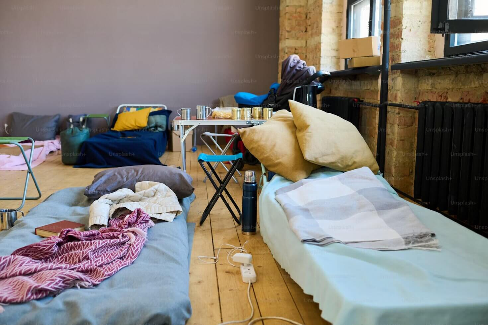

Quem Somos
A Amparo na Rua é uma organização sem fins lucrativos dedicada a oferecer apoio, alimentação, abrigo e oportunidades para pessoas em situação de rua.
Nossa Missão
Promover dignidade e esperança por meio de ações solidárias, atendimento social e programas de reintegração na sociedade.
Contato
Email: contato@amparonaruabem.org
Telefone: (11) 99888-7766
Endereço: Rua da Esperança, 222 - São Paulo/SP